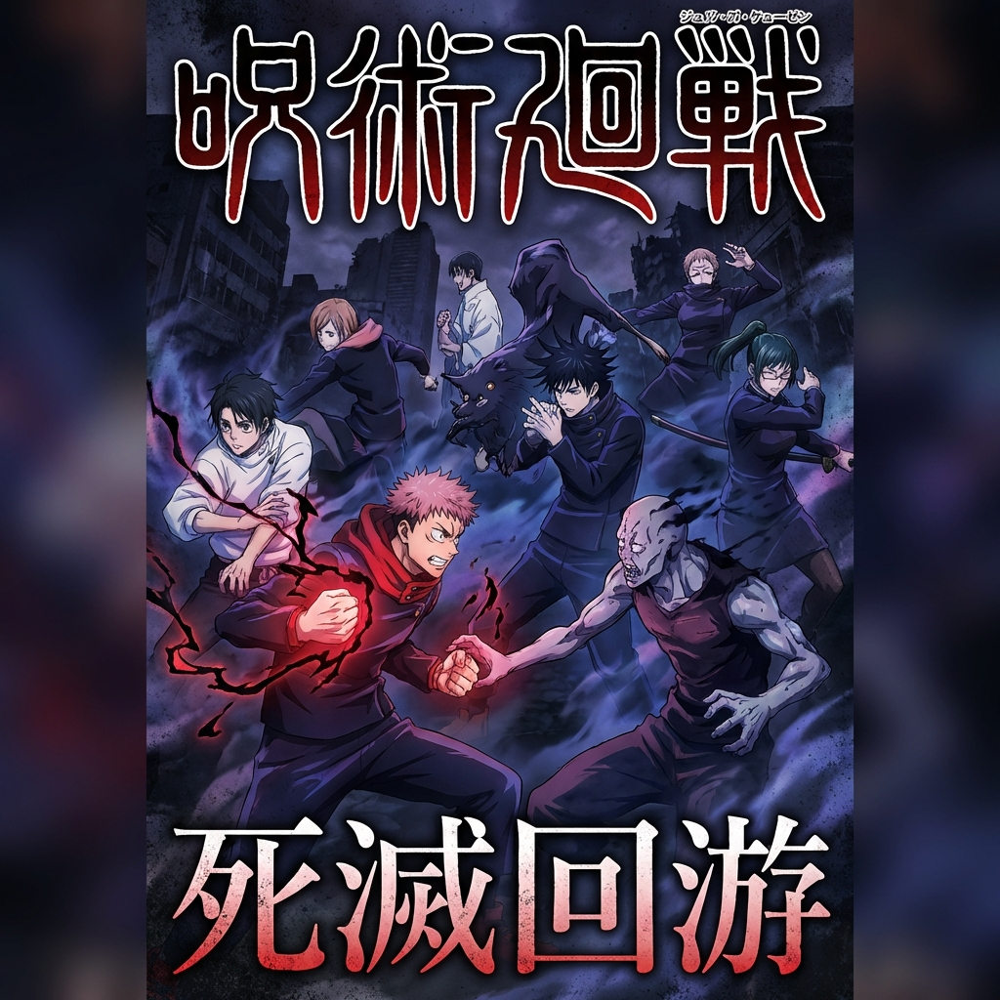
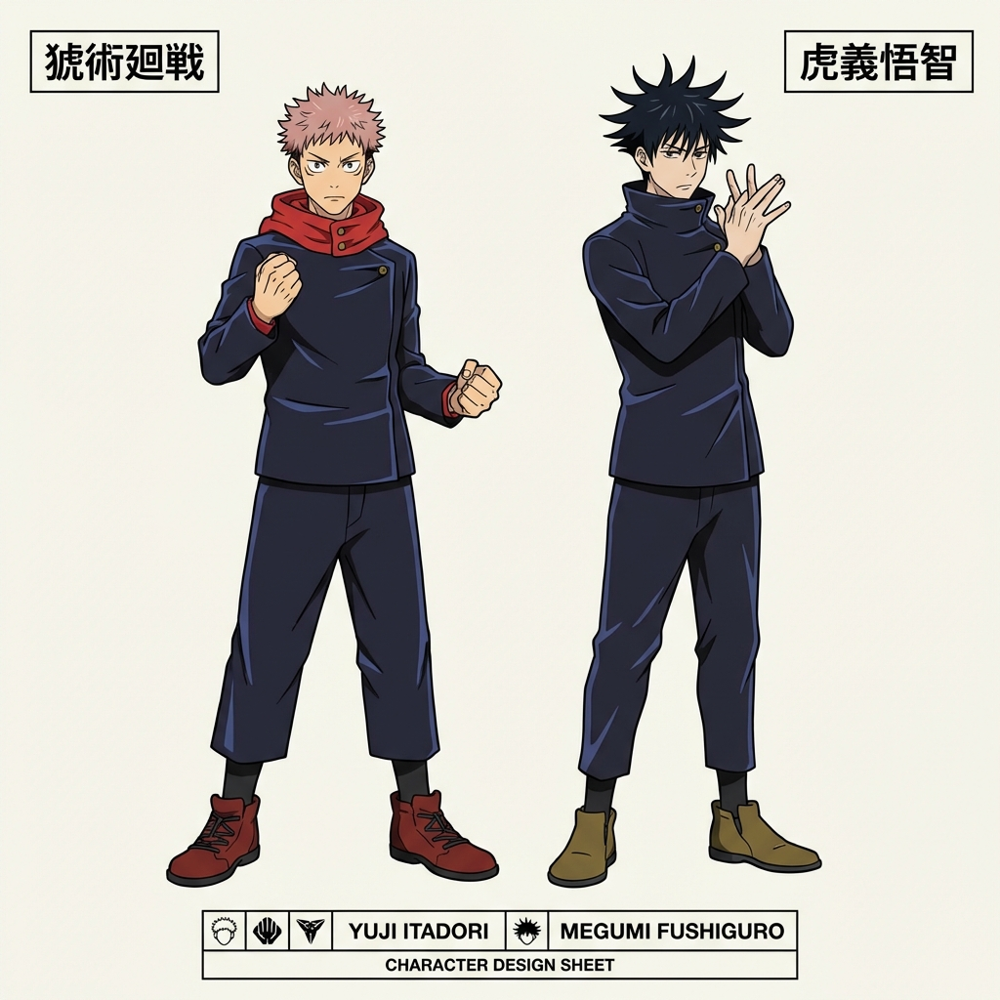

This is my page about the upcoming Season 3 of JJK.

In Season 3, the story will cover the Culling Game arc. It focuses on the deadly game started by Kenjaku where sorcerers battle each other.
Yuji Itadori and Megumi Fushiguro will have to fight to survive and save Tsumiki.

The fights are going to be amazing and the animation will be top tier! I can't wait to see Hakari and Higuruma.